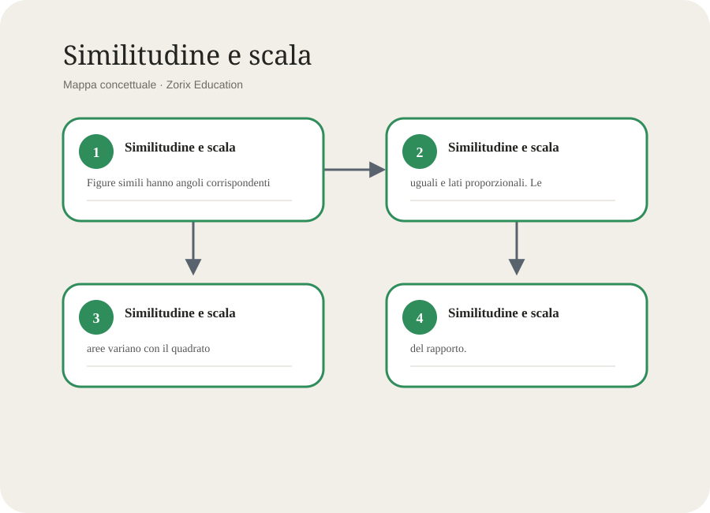
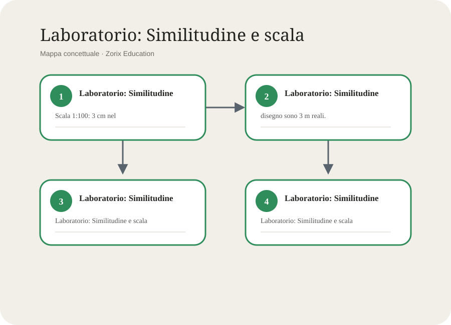

Segui le frecce, poi prova a ridisegnare lo schema senza guardare.

Usa il secondo schema per progettare una spiegazione o un’attività.
Il concetto centrale
Che cosa devi davvero capire
Figure simili hanno angoli corrispondenti uguali e lati proporzionali. Le aree variano con il quadrato del rapporto.
Esempio completamente guidato
Scala 1:100: 3 cm nel disegno sono 3 m reali.
- Individua la domanda e separa i dati utili.
- Richiama la definizione pertinente e giustifica la scelta.
- Procedi un passo alla volta, nominando l'operazione mentale svolta.
- Controlla il risultato con un metodo differente o un caso limite.
- Scrivi una frase conclusiva che risponda esattamente alla domanda.
Obiettivi di apprendimento
Similitudine e scala: obiettivi di apprendimento
Al termine del percorso dovrai saper definire il concetto con precisione, riconoscerlo in situazioni nuove, applicarlo con un procedimento controllabile e spiegare perché la soluzione è valida. La padronanza non coincide con la memoria: richiede scelta consapevole degli strumenti e capacità di correggersi. Nel caso di similitudine e scala, il nucleo da conservare è questo: Figure simili hanno angoli corrispondenti uguali e lati proporzionali. Le aree variano con il quadrato del rapporto.
Prova ora a riformulare il punto usando il connettivo «perché», poi con «quindi» e infine con «tuttavia». Le tre formulazioni obbligano a distinguere causa, conseguenza e limite del modello.
Prerequisiti e punto di partenza
Similitudine e scala: prerequisiti e punto di partenza
Prima di affrontare l'unità richiama ciò che già conosci. Scrivi tre parole associate al titolo, formula una previsione e annota un dubbio. Questo rende visibile la differenza tra idea iniziale e comprensione raggiunta, e permette di collegare il nuovo contenuto alle conoscenze precedenti. Nel caso di similitudine e scala, il nucleo da conservare è questo: Figure simili hanno angoli corrispondenti uguali e lati proporzionali. Le aree variano con il quadrato del rapporto.
Prova ora a riformulare il punto usando il connettivo «perché», poi con «quindi» e infine con «tuttavia». Le tre formulazioni obbligano a distinguere causa, conseguenza e limite del modello.
Spiegazione passo per passo
Similitudine e scala: spiegazione passo per passo
Scomponi il tema in quattro mosse: osserva gli elementi, descrivi le relazioni, applica la regola o il modello, verifica il risultato. Ogni passaggio deve poter essere espresso con una frase completa. Se non riesci a spiegare un passaggio, torna alla definizione e costruisci un esempio più semplice. Nel caso di similitudine e scala, il nucleo da conservare è questo: Figure simili hanno angoli corrispondenti uguali e lati proporzionali. Le aree variano con il quadrato del rapporto.
Prova ora a riformulare il punto usando il connettivo «perché», poi con «quindi» e infine con «tuttavia». Le tre formulazioni obbligano a distinguere causa, conseguenza e limite del modello.
Linguaggio specifico
Similitudine e scala: linguaggio specifico
Usare il lessico disciplinare evita ambiguità. Per ogni termine prepara una definizione, un esempio, un non-esempio e una relazione con un'altra parola. Non basta riconoscere il vocabolo: devi impiegarlo correttamente in una spiegazione e distinguerlo dai termini vicini. Nel caso di similitudine e scala, il nucleo da conservare è questo: Figure simili hanno angoli corrispondenti uguali e lati proporzionali. Le aree variano con il quadrato del rapporto.
Prova ora a riformulare il punto usando il connettivo «perché», poi con «quindi» e infine con «tuttavia». Le tre formulazioni obbligano a distinguere causa, conseguenza e limite del modello.
Metodo di studio attivo
Similitudine e scala: metodo di studio attivo
Leggi una porzione breve, chiudi il testo e ricostruiscila senza guardare. Confronta, correggi in un colore diverso e ripeti dopo un intervallo. Alterna richiamo, esercizio e spiegazione orale. Evidenziare da solo produce familiarità, ma non dimostra che saprai recuperare l'informazione durante una prova. Nel caso di similitudine e scala, il nucleo da conservare è questo: Figure simili hanno angoli corrispondenti uguali e lati proporzionali. Le aree variano con il quadrato del rapporto.
Prova ora a riformulare il punto usando il connettivo «perché», poi con «quindi» e infine con «tuttavia». Le tre formulazioni obbligano a distinguere causa, conseguenza e limite del modello.
Dal semplice al complesso
Similitudine e scala: dal semplice al complesso
Comincia da un caso privo di eccezioni, poi varia un elemento alla volta. Confronta ciò che resta invariato e ciò che cambia. Infine affronta un problema in cui la strategia non è dichiarata. Questo passaggio allena il trasferimento: la capacità di usare una conoscenza fuori dall'esempio studiato. Nel caso di similitudine e scala, il nucleo da conservare è questo: Figure simili hanno angoli corrispondenti uguali e lati proporzionali. Le aree variano con il quadrato del rapporto.
Prova ora a riformulare il punto usando il connettivo «perché», poi con «quindi» e infine con «tuttavia». Le tre formulazioni obbligano a distinguere causa, conseguenza e limite del modello.
Connessioni interdisciplinari
Similitudine e scala: connessioni interdisciplinari
Cerca un collegamento basato su un'idea reale, non sulla semplice presenza della stessa parola. Specifica il concetto comune, mostra come funziona nelle due discipline e indica anche una differenza. Un buon collegamento aggiunge comprensione; uno debole è solo un salto di argomento. Nel caso di similitudine e scala, il nucleo da conservare è questo: Figure simili hanno angoli corrispondenti uguali e lati proporzionali. Le aree variano con il quadrato del rapporto.
Prova ora a riformulare il punto usando il connettivo «perché», poi con «quindi» e infine con «tuttavia». Le tre formulazioni obbligano a distinguere causa, conseguenza e limite del modello.
Strategia per la verifica
Similitudine e scala: strategia per la verifica
Leggi due volte la consegna, sottolinea il verbo operativo, identifica dati e vincoli, pianifica prima di rispondere. Durante lo svolgimento rendi visibile il ragionamento. Alla fine controlla coerenza, unità, lessico, completezza e corrispondenza tra domanda e risposta. Nel caso di similitudine e scala, il nucleo da conservare è questo: Figure simili hanno angoli corrispondenti uguali e lati proporzionali. Le aree variano con il quadrato del rapporto.
Prova ora a riformulare il punto usando il connettivo «perché», poi con «quindi» e infine con «tuttavia». Le tre formulazioni obbligano a distinguere causa, conseguenza e limite del modello.
Analisi profonda del concetto
Similitudine e scala: analisi profonda del concetto
Distingui definizione, proprietà, procedura e campo di validità. La definizione stabilisce che cosa è il concetto; le proprietà descrivono come si comporta; la procedura indica come usarlo; il campo di validità chiarisce quando il modello funziona e quando occorre modificarlo. Questa distinzione impedisce di applicare meccanicamente una regola fuori contesto. Nel caso di similitudine e scala, il nucleo da conservare è questo: Figure simili hanno angoli corrispondenti uguali e lati proporzionali. Le aree variano con il quadrato del rapporto.
Prova ora a riformulare il punto usando il connettivo «perché», poi con «quindi» e infine con «tuttavia». Le tre formulazioni obbligano a distinguere causa, conseguenza e limite del modello.
Costruzione del modello mentale
Similitudine e scala: costruzione del modello mentale
Immagina il contenuto come una rete, non come una lista. Al centro colloca l'idea principale; intorno disponi cause, conseguenze, esempi, controesempi e limiti. Etichetta ogni freccia con un verbo preciso. Se due nodi non possono essere collegati da una frase sensata, il rapporto non è ancora compreso. Nel caso di similitudine e scala, il nucleo da conservare è questo: Figure simili hanno angoli corrispondenti uguali e lati proporzionali. Le aree variano con il quadrato del rapporto.
Prova ora a riformulare il punto usando il connettivo «perché», poi con «quindi» e infine con «tuttavia». Le tre formulazioni obbligano a distinguere causa, conseguenza e limite del modello.
Esempio, controesempio e caso limite
Similitudine e scala: esempio, controesempio e caso limite
Un esempio mostra che una definizione si applica; un controesempio rivela che una generalizzazione è falsa; un caso limite mette alla prova i confini del modello. Costruirli autonomamente è uno degli strumenti più potenti per passare da una conoscenza fragile a una comprensione trasferibile. Nel caso di similitudine e scala, il nucleo da conservare è questo: Figure simili hanno angoli corrispondenti uguali e lati proporzionali. Le aree variano con il quadrato del rapporto.
Prova ora a riformulare il punto usando il connettivo «perché», poi con «quindi» e infine con «tuttavia». Le tre formulazioni obbligano a distinguere causa, conseguenza e limite del modello.
Diagnosi degli errori
Similitudine e scala: diagnosi degli errori
Quando una risposta è sbagliata, non limitarti a sostituirla. Classifica l'errore: lettura della consegna, richiamo della regola, scelta della strategia, esecuzione, linguaggio o controllo. Scrivi il punto esatto in cui il ragionamento devia e la domanda che avrebbe permesso di accorgersene. Nel caso di similitudine e scala, il nucleo da conservare è questo: Figure simili hanno angoli corrispondenti uguali e lati proporzionali. Le aree variano con il quadrato del rapporto.
Prova ora a riformulare il punto usando il connettivo «perché», poi con «quindi» e infine con «tuttavia». Le tre formulazioni obbligano a distinguere causa, conseguenza e limite del modello.
Laboratorio pratico
Similitudine e scala: laboratorio pratico
Progetta una piccola attività osservabile: stabilisci scopo, materiali o fonti, procedura, dati da raccogliere e criterio di conclusione. Mantieni separati ciò che osservi e ciò che interpreti. Documenta anche risultati inattesi: spesso sono la parte più informativa dell'esperienza. Nel caso di similitudine e scala, il nucleo da conservare è questo: Figure simili hanno angoli corrispondenti uguali e lati proporzionali. Le aree variano con il quadrato del rapporto.
Prova ora a riformulare il punto usando il connettivo «perché», poi con «quindi» e infine con «tuttavia». Le tre formulazioni obbligano a distinguere causa, conseguenza e limite del modello.
Comunicazione orale
Similitudine e scala: comunicazione orale
Prepara un intervento in tre tempi: una domanda iniziale che orienta, uno sviluppo con due idee e un esempio, una sintesi che torna alla domanda. Parla usando parole-chiave, non un testo imparato a memoria. Allenati a rispondere a «come lo sai?» e «quando non vale?». Nel caso di similitudine e scala, il nucleo da conservare è questo: Figure simili hanno angoli corrispondenti uguali e lati proporzionali. Le aree variano con il quadrato del rapporto.
Prova ora a riformulare il punto usando il connettivo «perché», poi con «quindi» e infine con «tuttavia». Le tre formulazioni obbligano a distinguere causa, conseguenza e limite del modello.
Scrittura disciplinare
Similitudine e scala: scrittura disciplinare
Una risposta completa contiene affermazione, evidenza e ragionamento. L'affermazione risponde; l'evidenza porta dato, regola o dettaglio; il ragionamento mostra perché l'evidenza sostiene la risposta. Usa connettivi causali, avversativi e conclusivi per rendere visibile la struttura logica. Nel caso di similitudine e scala, il nucleo da conservare è questo: Figure simili hanno angoli corrispondenti uguali e lati proporzionali. Le aree variano con il quadrato del rapporto.
Prova ora a riformulare il punto usando il connettivo «perché», poi con «quindi» e infine con «tuttavia». Le tre formulazioni obbligano a distinguere causa, conseguenza e limite del modello.
Confronto e classificazione
Similitudine e scala: confronto e classificazione
Costruisci una tabella con criteri espliciti, evitando categorie sovrapposte. Per ogni elemento indica somiglianze, differenze e un criterio decisivo. Una classificazione è utile quando permette di prevedere o spiegare qualcosa, non quando si limita a distribuire etichette. Nel caso di similitudine e scala, il nucleo da conservare è questo: Figure simili hanno angoli corrispondenti uguali e lati proporzionali. Le aree variano con il quadrato del rapporto.
Prova ora a riformulare il punto usando il connettivo «perché», poi con «quindi» e infine con «tuttavia». Le tre formulazioni obbligano a distinguere causa, conseguenza e limite del modello.
Trasferimento a un contesto nuovo
Similitudine e scala: trasferimento a un contesto nuovo
Cambia superficie al problema conservandone la struttura: modifica personaggi, numeri, lingua, ambiente o mezzo di rappresentazione. Poi identifica ciò che resta identico. Se sai riconoscere la stessa struttura sotto forme diverse, la conoscenza è disponibile per situazioni autentiche. Nel caso di similitudine e scala, il nucleo da conservare è questo: Figure simili hanno angoli corrispondenti uguali e lati proporzionali. Le aree variano con il quadrato del rapporto.
Prova ora a riformulare il punto usando il connettivo «perché», poi con «quindi» e infine con «tuttavia». Le tre formulazioni obbligano a distinguere causa, conseguenza e limite del modello.
Percorso di recupero e potenziamento
Similitudine e scala: percorso di recupero e potenziamento
Se il risultato è incerto, torna a definizioni ed esempi minimi, usa lo schema e completa esercizi a scelta guidata. Se la padronanza è solida, cerca eccezioni, confronta fonti, crea un problema e valuta due strategie. Recupero e potenziamento lavorano sullo stesso concetto a profondità differenti. Nel caso di similitudine e scala, il nucleo da conservare è questo: Figure simili hanno angoli corrispondenti uguali e lati proporzionali. Le aree variano con il quadrato del rapporto.
Prova ora a riformulare il punto usando il connettivo «perché», poi con «quindi» e infine con «tuttavia». Le tre formulazioni obbligano a distinguere causa, conseguenza e limite del modello.
Glossario operativo
Le parole da saper usare
| Parola | Significato operativo | Prova di padronanza |
|---|---|---|
| Figure | Termine chiave da definire nel contesto di Similitudine e scala e da collegare al modello dell'unità. | Scrivi un esempio e un non-esempio. |
| Simili | Termine chiave da definire nel contesto di Similitudine e scala e da collegare al modello dell'unità. | Scrivi un esempio e un non-esempio. |
| Hanno | Termine chiave da definire nel contesto di Similitudine e scala e da collegare al modello dell'unità. | Scrivi un esempio e un non-esempio. |
| Angoli | Termine chiave da definire nel contesto di Similitudine e scala e da collegare al modello dell'unità. | Scrivi un esempio e un non-esempio. |
| Corrispondenti | Termine chiave da definire nel contesto di Similitudine e scala e da collegare al modello dell'unità. | Scrivi un esempio e un non-esempio. |
| Uguali | Termine chiave da definire nel contesto di Similitudine e scala e da collegare al modello dell'unità. | Scrivi un esempio e un non-esempio. |
| E | Termine chiave da definire nel contesto di Similitudine e scala e da collegare al modello dell'unità. | Scrivi un esempio e un non-esempio. |
| Lati | Termine chiave da definire nel contesto di Similitudine e scala e da collegare al modello dell'unità. | Scrivi un esempio e un non-esempio. |
| Proporzionali | Termine chiave da definire nel contesto di Similitudine e scala e da collegare al modello dell'unità. | Scrivi un esempio e un non-esempio. |
| Le | Termine chiave da definire nel contesto di Similitudine e scala e da collegare al modello dell'unità. | Scrivi un esempio e un non-esempio. |
| Aree | Termine chiave da definire nel contesto di Similitudine e scala e da collegare al modello dell'unità. | Scrivi un esempio e un non-esempio. |
| Variano | Termine chiave da definire nel contesto di Similitudine e scala e da collegare al modello dell'unità. | Scrivi un esempio e un non-esempio. |
Laboratorio
Esercizi graduati con tracce
- Livello 1. Definisci Similitudine e scala in massimo quattro righe e aggiungi un esempio.
Traccia di soluzione
Riparti dalla definizione: Figure simili hanno angoli corrispondenti uguali e lati proporzionali. Le aree variano con il quadrato del rapporto. Usa l'esempio «Scala 1:100: 3 cm nel disegno sono 3 m reali.» come modello di procedimento, modificando dati e contesto. Concludi con un controllo esplicito.
- Livello 2. Confronta un caso corretto di Similitudine e scala con un caso che sembra simile ma non lo è.
Traccia di soluzione
Riparti dalla definizione: Figure simili hanno angoli corrispondenti uguali e lati proporzionali. Le aree variano con il quadrato del rapporto. Usa l'esempio «Scala 1:100: 3 cm nel disegno sono 3 m reali.» come modello di procedimento, modificando dati e contesto. Concludi con un controllo esplicito.
- Livello 3. Costruisci una mappa con quattro nodi e tre relazioni etichettate.
Traccia di soluzione
Riparti dalla definizione: Figure simili hanno angoli corrispondenti uguali e lati proporzionali. Le aree variano con il quadrato del rapporto. Usa l'esempio «Scala 1:100: 3 cm nel disegno sono 3 m reali.» come modello di procedimento, modificando dati e contesto. Concludi con un controllo esplicito.
- Livello 4. Spiega perché questo errore è plausibile e come correggerlo: Applicare il rapporto lineare direttamente alle aree.
Traccia di soluzione
Riparti dalla definizione: Figure simili hanno angoli corrispondenti uguali e lati proporzionali. Le aree variano con il quadrato del rapporto. Usa l'esempio «Scala 1:100: 3 cm nel disegno sono 3 m reali.» come modello di procedimento, modificando dati e contesto. Concludi con un controllo esplicito.
- Livello 5. Applica l'idea a una situazione quotidiana non citata nella pagina.
Traccia di soluzione
Riparti dalla definizione: Figure simili hanno angoli corrispondenti uguali e lati proporzionali. Le aree variano con il quadrato del rapporto. Usa l'esempio «Scala 1:100: 3 cm nel disegno sono 3 m reali.» come modello di procedimento, modificando dati e contesto. Concludi con un controllo esplicito.
- Livello 6. Formula una domanda da verifica e scrivi i criteri di una risposta eccellente.
Traccia di soluzione
Riparti dalla definizione: Figure simili hanno angoli corrispondenti uguali e lati proporzionali. Le aree variano con il quadrato del rapporto. Usa l'esempio «Scala 1:100: 3 cm nel disegno sono 3 m reali.» come modello di procedimento, modificando dati e contesto. Concludi con un controllo esplicito.
- Livello 7. Collega l'unità a un'altra materia indicando somiglianza e differenza.
Traccia di soluzione
Riparti dalla definizione: Figure simili hanno angoli corrispondenti uguali e lati proporzionali. Le aree variano con il quadrato del rapporto. Usa l'esempio «Scala 1:100: 3 cm nel disegno sono 3 m reali.» come modello di procedimento, modificando dati e contesto. Concludi con un controllo esplicito.
- Livello 8. Prepara una spiegazione orale di tre minuti con apertura, sviluppo e sintesi.
Traccia di soluzione
Riparti dalla definizione: Figure simili hanno angoli corrispondenti uguali e lati proporzionali. Le aree variano con il quadrato del rapporto. Usa l'esempio «Scala 1:100: 3 cm nel disegno sono 3 m reali.» come modello di procedimento, modificando dati e contesto. Concludi con un controllo esplicito.
Autovalutazione
Quando l'unità è davvero acquisita
- So spiegare il tema senza leggere.
- So usare correttamente almeno otto parole del glossario.
- So risolvere un caso nuovo e motivare ogni passaggio.
- So riconoscere e correggere l'errore tipico.
- So creare un collegamento interdisciplinare non forzato.